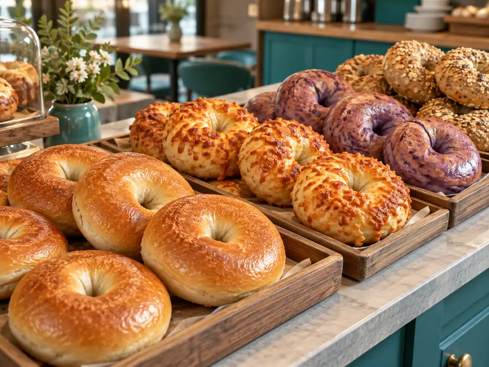

CONCEPT
散策の途中に、
立ち寄れる場所をつくる
COFFEEJACKは、秋田市千秋公園のふもとにあるコーヒーとベーグルの店です。 コンセプトは「レトロアメリカン」。照明を少し抑えた店内に、豆を挽く香りと ベーグルの焼ける香りが満ちています。
このお店は、千秋公園に足を運ぶきっかけをつくり、まちを元気にしたい、 という考えから始まりました。だから、店内でゆっくり過ごす時間も、 公園を歩きながらのテイクアウトも、どちらも同じように想定されています。
公式サイトでは、ベーグルのことをこう書いています。「朝の顔、昼の味方、夜のおとも」。 一日のどの時間にも居場所がある食べもの、という意味だと受け取りました。
